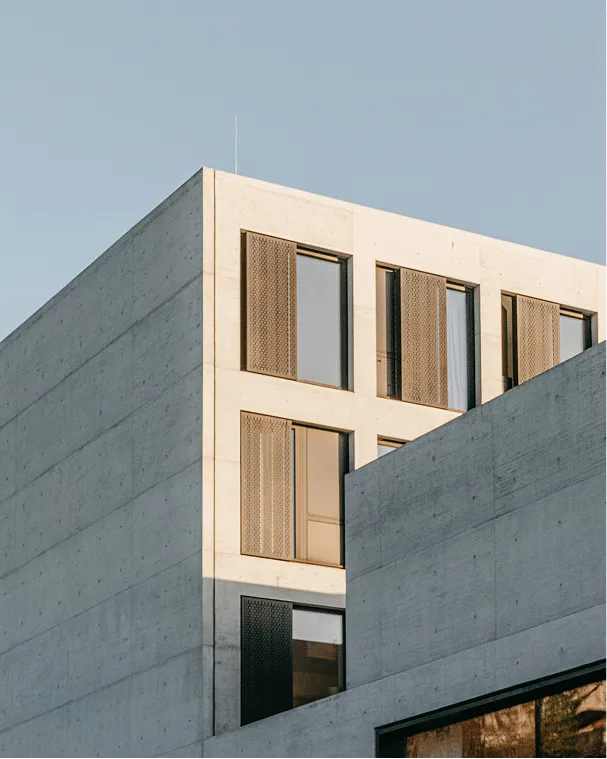

Estudio de arquitectura · Desde 1998
Espacios que respiran, formas que perduran.
01 — Estudio

Diseñamos lugares para ser habitados con calma.
Fundado en 1998, nuestro estudio aborda cada proyecto desde una mirada sensible al contexto, al material y a la luz. Creemos en la arquitectura como un acto silencioso que transforma la experiencia cotidiana.
Un equipo multidisciplinar de arquitectos, paisajistas y diseñadores trabajando entre Madrid y Lisboa.
120+
Proyectos
28
Años
17
Premios